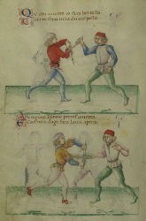

Tous les membres de la troupe ont un penchant naturel pour le jeu scénique, l'interaction avec le public et les mises en situation. Nous avons plusieurs animations rodées mais pouvons également en mettre en place si vous avez des demandes particulières...
Saynettes
Duel à la taverne

Tout commence par quelques soldats espérant boire un coup à l'oeil...
La chaleur de Provence, l'ennui, rien ne vaut une bonne taverne pour passer la fin de journée loin du campement nauséabond.
Chahuttant la tenancière, les soldats deviennent encombrants.
Mais si le tavernier n'oppose pas de résistance, sa fille n'entend pas s'en laisser compter et défend les interêts de sa famille, l'épée à la main !
Le duel judiciaire
 Lorsque seigneurs et dames viennent faire bombance autour de la signature de nouveaux traités de paix et commerciaux, la requête de la bugadière Perette fait quelque peu tâche.
Lorsque seigneurs et dames viennent faire bombance autour de la signature de nouveaux traités de paix et commerciaux, la requête de la bugadière Perette fait quelque peu tâche.
Deux de ses plus belles volailles auraient été volées par Margot et servies au souper.
Faute de preuve, justice doit être rendue. Un duel judiciaire aura donc lieu, autant pour divertir les convives que pour régler ce différend.
Organisation de tournois
Escrime historique

Combats
Le moyen-âge ne fut pas toujours féodal : à la fin du 13ième siècle, justice n'est plus rendue par le seigneur mais dans des duels parfois mortels, quelque soit votre classe sociale.
Les règles changent radicalement, et les puissants sont approchés par les premiers maîtres d'arme venant vendre leurs connaissances et manuscrits.
Puis le duel judiciaire devient tournoi, tel qu'on l'imagine aujourd'hui. L'on n'y vient plus chercher justice mais honneur.
Le bourreau
Mal aimé mais pourtant indissociable de l'image de la vie au moyen-âge, l'atelier du Bourreau se décline en séances de photos au pilori... pour rire ou frémir en famille à la vue des instruments de torture.
Mais pour ceux qui arrivent à passer outre les préjugés, l'atelier peut se poursuivre par une présentation plus complète du destin incroyable de ces dynasties, qui ont mis à mort de père en fils, jusqu'à l'abolition de la peine de mort.
Archerie
L’histoire de France est remplie d’exemples de défaites face aux archers. D’une manière générale, à la fin de l’empire Romain, aucune armée de fantassins ou de cavaliers n’est parvenue à vaincre face à une armée composée essentiellement d’archers…
Même sans aimer Robin des Bois, il appartient d’étudier de près ce qui fait la puissance de cette arme si simple en apparence.
De l’arc Mongol à double courbures au Long Bow anglais, quelles sont les différences de matériaux ou d’utilisation ? Quel type de flèche utiliser pour chasser, percer une armure, ralentir un navire ou incendier un engin de siège ?
Et si la théorie vous ennuie, venez voir nos archers réaliser des prouesses au tir sur cible, à la fenêtre, ou au sablier.

Acrobaties enfantines

Nos jeunes saltimbanques et apprenties acrobates sauront vous divertir de leurs postures étranges et de leurs jongleries...
Spectacle de feu
 Enfin la nuit… c’est le moment où les chevaliers vont se coucher, mais ne partez pas encore, installez-vous un instant, Mesdames et Messieurs, et ouvrez grands vos yeux car devant vous va commencer le grand spectacle du feu.
Enfin la nuit… c’est le moment où les chevaliers vont se coucher, mais ne partez pas encore, installez-vous un instant, Mesdames et Messieurs, et ouvrez grands vos yeux car devant vous va commencer le grand spectacle du feu.
L’écarlate va vous montrer ses talents les plus incroyables qui lui ont valu son surnom ! Nul doute qu’une fois son numéro fini, le soleil vous paraitra bien triste à regarder…
Nous vivons et mangeons en famille sur le camp qui devient le temps d'un week-end, le mode de vie que nous avons choisi. L'on s'adonne aux activités qui rythmaient la vie de différentes classes sociales médiévales.
Au travers de nos costumes, de l'artisanat et des arts de la table, nous faisons revivre la fin du XIIème siècle et le début du XIIIème.
Mais nous présentons aussi les évolutions des costumes, du matériel millitaire, de la société sur tout le moyen-âge et la Renaissance.